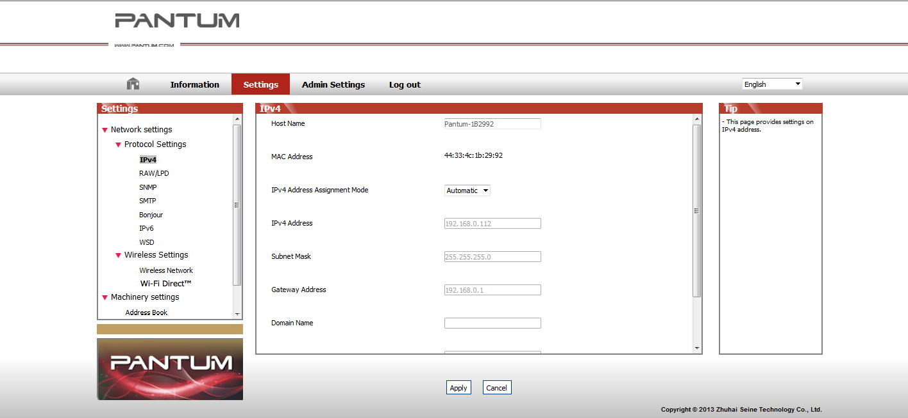

4. 유선 네트워크 설정 (유선 네트워크 프린터 모델의 경우)
프린터에서 일부 네트워크 매개변수를 설정해야 할 수 있습니다. 이 매개변수는 내장 웹 서버에서 설정할 수 있습니다.
4.1. IP 주소 설정
프린터의 IP 주소는 DHCP 기능을 통해 자동으로 가져 오거나 수동으로 설정할 수 있습니다.
| 자동 설정
DHCP 자동 설정 기능은 프린터에서 기본적으로 활성화되어 있습니다.
1. 네트워크 케이블을 통해 프린터를 네트워크에 연결하고 시동 준비 작업을 완료하십시오.
2. 프린터가 서버에서 할당 한 IP 주소를 자동으로 가져옵니다. 자동으로 얻은 IP 주소는 몇 분 후에 사용할 수 있습니다.
 |
노트: |
• DHCP가 IP 주소를 자동으로 가져올 수 없는 경우 프린터는 자동으로 기본 IP 주소 인 169.254.xx.xx를 사용합니다. • DHCP의 기능으로 인해 프린터를 오랫동안 사용하지 않았거나 네트워크 액세스 지점이 변경되어 프린터 연결에 실패 할 경우 네트워크에서 자동으로 할당 한 프린터의 IP 주소가 다를 수 있습니다. DHCP 기능을 사용하는 동안 네트워크에서 자동으로 할당 된 IP 주소가 프린터의 MAC 주소에 바인딩되는 것이 좋습니다. |
| 수동 설정
웹 브라우저의 주소 표시 줄에 IP 주소를 입력하여 내장 웹 서버를 엽니다.
1. 탐색 모음에서 설정을 클릭하여 설정 페이지를 엽니다.
2. 네트워크 설정 - IPV4 설정을 선택합니다.
3. IP 주소 할당 모드 (수동), IP 주소 및 서브넷 마스크를 설정하십시오. 다른 항목은 선택 사항입니다.
4. 적용을 클릭하여 설정을 저장합니다.
|
|
노트: |
• 내장 웹 서버를 사용하여 IP 주소 할당 모드를 자동 또는 수동으로 변경할 수 있습니다. |
4.2. 네트워크에 프린터 설치
이 설정에서 프린터는 네트워크에 직접 연결되어 있으며 네트워크상의 모든 컴퓨터가 프린터에서 직접 인쇄 할 수 있도록 설정할 수 있습니다.
1. 프린터를 시작하기 전에 먼저 네트워크 케이블을 프린터의 네트워크 포트에 연결하여 네트워크에 직접 연결하십시오.
2. 프린터를 시작하고 아래 그림과 같이 제어판의 상태 표시기에 준비 상태가 표시 될 때까지 기다립니다.
3. 프린터 CD를 컴퓨터에 넣으십시오. 소프트웨어 설치 프로그램이 시작되지 않으면 CD의 "setup.exe"파일을 찾아 더블 클릭하여 파일을 실행하십시오.
4. 설치 프로그램의 작동 지침을 따르십시오.
5. 계속해서 설치를 완료하십시오.
|
|
노트: |
• 설치 프로그램이 프린터를 선택하라는 메시지를 표시하면 감지 된 프린터에서 적절한 프린터 이름을 선택할 수 있습니다. • 프린터 이름이 감지 된 프린터에 나타나지 않으면 새로 고침을 클릭하고 네트워크에서 프린터를 검색하십시오. • 연결할 프린터의 IP 주소를 알고있는 경우 설치할 IP 주소를 지정하려면 Specify an IP address for Installation (설치용 IP 주소 지정)을 선택합니다. |
4.3. 네트워크 제품 설정
4.3.1. 네트워크 설정보기 또는 변경
내장 웹 서버를 사용하여 IP 설정을 보거나 변경할 수 있습니다.
1. 제어판의 "취소 / 계속"버튼을 길게 눌러 데모 정보 페이지를 인쇄하고 프린터의 IP 주소를 봅니다. DEMO 페이지는 유휴 상태에서 제어판의 버튼을 오랫동안 눌러 (아래 그림 참조) 인쇄 할 수 있습니다.
2. 웹 브라우저의 주소 표시 줄에 IP 주소를 입력하여 내장 웹 서버에 액세스합니다.
3. 설정 탭을 클릭하여 네트워크 정보를 얻습니다. 필요에 따라 설정을 변경하십시오.

4.3.2. 웹 서버 로그인 암호 설정 또는 변경
내장 웹 서버를 사용하여 네트워크 암호를 설정하거나 기존 암호를 변경하십시오.
|
|
노트: |
• 기본 사용자 이름은 "admin"이고 초기 암호는 "000000"입니다. |
1. 내장 웹 서버를 열려면 먼저 로그인 하십시오.
2. 관리자 설정 탭을 누릅니다.
3. 암호 상자 및 암호 확인 상자에 새 암호를 입력하십시오.
4. 창 하단에서 적용 버튼을 눌러 설정을 저장하십시오.
4.3.3. 공장 설정 값으로 복원
프린터의 모든 매개 변수 설정을 재설정하려면 프린터의 전원을 끈 후 다시 프린터의 전원을 켤 때 "Cancel / Continue"버튼을 길게(10초) 눌러 프린터가 Ready 상태가 되면 공장 출고 시 설정으로 복원 할 수 있습니다. 재설정 작업을 마칩니다.